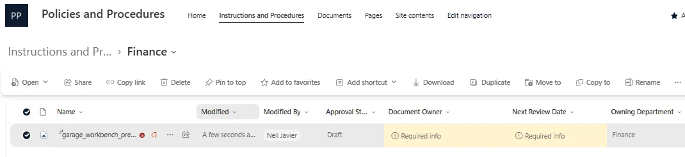
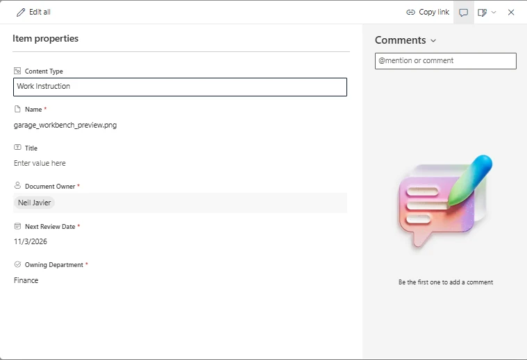

Build Notes · SharePoint · Lumen Photonics lab
Why this post exists
The lab pages show what I built. Build Notes explain why: the decision behind a setting, what it does and doesn't guarantee, and what I'd tell a business owner before relying on it.
The Problem
In the Lumen Photonics lab, the Quality Manager came back from an ISO 9001 audit with a finding: an operator followed an outdated work instruction. To fix that, every controlled document needs an owner, an owning department and a date it's due for review. The question was how to make sure every document carries that information, not just the ones uploaded by careful people.
What a Content Type Is
A content type is a reusable definition of one kind of document or item: the columns that describe it, a template for new files and a description. It's defined once and can be used in many libraries, so an invoice, a procedure or a work instruction is described the same way everywhere it appears.
Every content type has a parent. Procedure and Work Instruction inherit from SharePoint's built-in Document type, which is why they still have a name, a title and version history, and add their own required columns on top.
When You Need One (and When You Don't)
What I Built
Two site content types, Procedure and Work Instruction, each requiring Document Owner, Next Review Date and Owning Department. In the Instructions and Procedures library I removed the generic Document type, so nobody can save a file that skips the metadata. Each department folder sets Owning Department automatically through a column default value. Details are on the Document Control page.
What the User Actually Sees
My concern with any metadata design is the lazy or unaware user. Modern SharePoint uploads don't stop to ask for metadata: the file lands in the folder and the user can walk away. So I uploaded a file the way a hurried employee would and looked at what happened.

The missing fields are flagged in the view, and because the library requires check-out, the file stays checked out to the uploader and invisible to everyone else until the required fields are filled in and it's checked in. Content approval then keeps it hidden until an approver releases it. If a manager went looking for the file, they wouldn't find it, which is the point: an incomplete document never reaches the people relying on it.
One practical rule came out of this: put the required columns in the library's default view. If they aren't shown, the "Required info" warning isn't either.
Where the Fields Come From
Opening the file shows its properties panel. The fields, their order and whether each is required come from the content type, so a Procedure and a Work Instruction can each show a different panel. Unlike a list, a document library can't replace this panel with a custom Power Apps form, so libraries rely on content types, defaults and validation instead.

What Content Types Don't Do
How I'd Explain It in an Interview
"Content types are how I enforce consistent metadata across kinds of documents and across sites. In my lab, Procedure and Work Instruction each require an owner, an owning department and a next review date, and the generic Document type is removed, so every controlled document can be reported on for annual review. Check-out and content approval keep incomplete or unapproved documents hidden, which is what ISO 9001 document control needs."
Where this is built